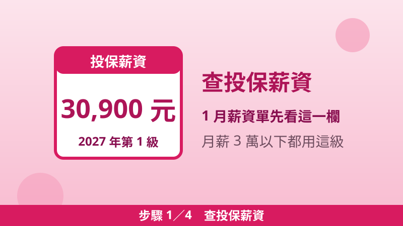
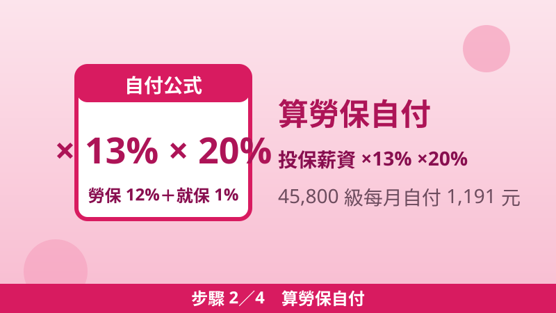
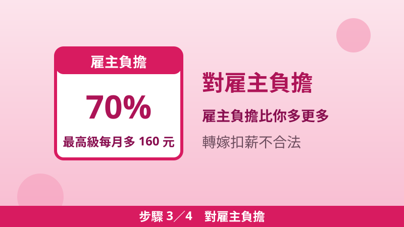
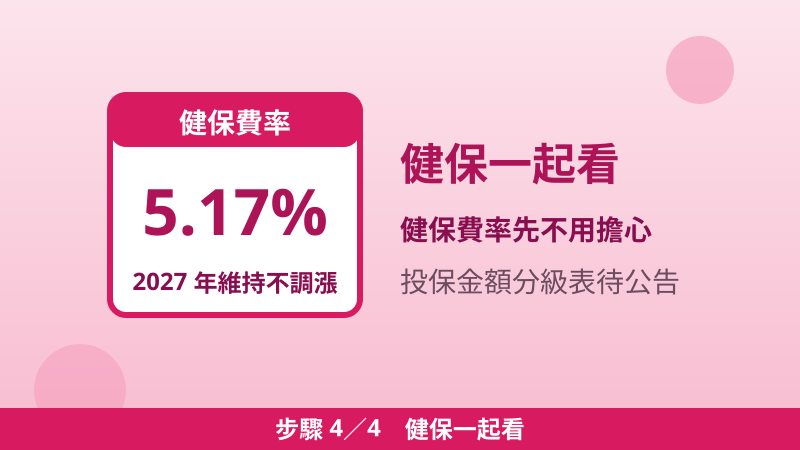

2027 年勞保費調到 13%：月薪 4 萬每月多扣 40 元、最高級多 46 元，4 步驟對薪資單
2027 年 1 月 1 日起，勞保費率從 12.5% 調到 13%，正式碰到《勞工保險條例》的法定上限。勞保局表示，約 1,049 萬名勞工受影響。調的不只是費率：最低工資同步調到 30,900 元，勞保投保薪資第 1 級跟著調高、總級距從 11 級縮成 10 級。你的薪資單從 2027 年 1 月起會多扣多少？一張表對完就知道。
2027 年改了哪 3 件事
- 費率調高：勞保普通事故保險費率由現行 12.5% 調整為 13%，內含就業保險費率 1%，2027 年起實際以 12% 計收勞保保險費。勞保局已於 2026 年 10 月 21 日公告，並在 2026 年 9 月份保險費繳款單背面印製通知提醒投保單位。
- 級距調整：配合最低工資調漲，勞保投保薪資分級表第 1 級由 29,500 元調為 30,900 元、刪除原第 2 級 30,300 元，其餘金額不變、等級依序遞移，總級距由 11 級縮減為 10 級，最高一級仍為 45,800 元。勞動部 2026 年 11 月 17 日修正發布，2027 年 1 月 1 日起施行。
- 最低工資調高：2027 年 1 月 1 日起每月最低工資由 29,500 元調為 30,900 元、每小時最低工資由 196 元調為 205 元。原本投保 29,500 元、30,300 元的員工，2027 年起至少要用 30,900 元投保。
每月多扣多少？保費對照表
勞保費公式：月投保薪資 × 費率 × 負擔比率。一般受僱勞工的負擔比率是勞工 20%、雇主 70%、政府補助 10%，勞保與就業保險分開四捨五入到元。下表是 2027 年勞保＋就業保險合計的每月金額：
| 月投保薪資 | 勞工每月自付 | 雇主每月負擔 | 勞工比 2026 多繳 |
|---|---|---|---|
| 30,900 元（第 1 級） | 804 元（勞保 742＋就保 62） | 2,812 元（勞保 2,596＋就保 216） | —（2026 年無此級距） |
| 40,100 元（第 7 級，月薪約 4 萬） | 1,042 元（勞保 962＋就保 80） | 3,649 元（勞保 3,368＋就保 281） | ＋40 元 |
| 45,800 元（第 10 級，最高） | 1,191 元（勞保 1,099＋就保 92） | 4,168 元（勞保 3,847＋就保 321） | ＋46 元 |
月薪 4 萬元的人，投保薪資落在 40,100 元一級，2027 年每月勞保自付 1,042 元，比 2026 年多 40 元，一年多 480 元。以平均投保薪資 36,658 元試算，勞保局表示勞工每月多繳約 37 元、一年約多 440 元。雇主那邊多得更多：最高級雇主每月多 160 元。
為什麼 13% 就是上限？
這次不是臨時加稅，是《勞工保險條例》寫好的法定調升機制：2009 年勞保年金上路時費率 7.5%，實施第 3 年起逐年調高，達到 10% 後改為每 2 年調升 0.5 個百分點——2023 年調到 12%、2025 年 12.5%，2027 年 13% 正式觸及現行法規上限。未來若要再調高費率，必須先修法才有法源依據。
圖文四步驟：2027 年 1 月薪資單這樣對

步驟 1查投保薪資
2027 年 1 月薪資單先看「勞保投保薪資」欄位：2027 年第 1 級是 30,900 元，月薪 3 萬以下都用這一級。

步驟 2算勞保自付
投保薪資 ×13% ×20%：勞保 12% 加就業保險 1%，再乘勞工負擔比率 20%。月薪 4 萬、投保 40,100 元，每月自付 1,042 元。

步驟 3對雇主負擔
雇主負擔 70%，比你多更多：最高級 45,800 元，雇主每月負擔 4,168 元、比 2026 年多 160 元。負擔比率是法定的，雇主不能把增加的保費轉嫁到員工薪水上。

步驟 4健保一起看
健保費率先不用擔心：衛福部表示 2027 年不需調整一般保費費率，維持 5.17%。不過 2027 年健保投保金額分級表尚未公告，仍以健保署正式公告為準。
常見問題
勞保費調漲，勞保年金會跟著變多嗎？
不會直接變多。勞保老年年金按「投保薪資」與「年資」計算，費率調漲是為了勞保財務永續，給付公式不變；想提高年金，關鍵是投保薪資與年資，不是費率。
公司可以把多出來的保費從我薪水扣嗎？
不行。勞保費負擔比率是法定的：一般受僱勞工勞工 20%、雇主 70%、政府 10%，雇主多負擔的部分不能轉嫁給員工。
年滿 65 歲、已經領勞保老年給付，還要繳嗎？
年滿 65 歲且已領勞保老年給付者，不參加就業保險，只繳普通事故保險費（勞保 12% 部分）。職災保險費則一律由雇主全額負擔，不從薪水扣。
📖 延伸閱讀：2027 最低工資調到 30,900 元：月薪＋1,400、時薪 205 元，4 步驟檢查你的薪水有沒有少給 ／ 2026 健保費怎麼算？費率 5.17%、58 級對照、眷屬最多算 3 口，月薪 4 萬每月扣 622 元 ／ 115 年度綜所稅新制：免稅額 10.1 萬、標扣 13.6 萬、薪資扣除 22.7 萬，年底前 4 件事
📎 資料來源
- 勞動部勞工保險局「自116年1月1日起，勞工保險費率依法調整為13%（含就業保險費率1%）」（費率 12.5%→13%、116 年起以 12% 計收勞保費、9 月繳款單背面通知）：bli.gov.tw
- 勞動部勞工保險局「116年1月1日起適用之勞保、災保投保薪資分級表、保險費分攤金額表及試算系統資料已更新」（2026-11-17：第 1 級 30,900 元、刪除 30,300 元、其餘未修正、總級距 10 級）：bli.gov.tw
- 勞動部勞工保險局「勞保、就保、災保保險費試算」系統（保費分擔金額表試算）：bli.gov.tw
- 勞動部最低工資公告（2027 年月薪 30,900 元、時薪 205 元）：mol.gov.tw
- 衛生福利部中央健康保險署「全民健康保險費率」（現行一般保費費率 5.17%；2027 年費率衛福部表示維持不調漲，正式費率以衛福部公告為準）：nhi.gov.tw
最後查證日期：2026-11-26
免責聲明：本文僅供參考，補助資格與金額以政府官方最新公告為準，申請前請至官方網站或洽受理機關確認。